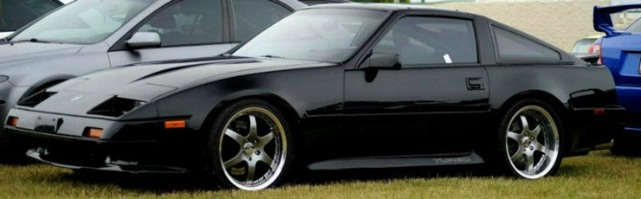

-
Experiences with a welded open 3.9 diff? Or any for the matter.
Opinions?
I've heard about the downfalls in cornering with the rear end acting funny, cornering isn't the goal for me though.. just want solid dig launches. With R200 CLSD getting hard to find, expensive to rebuild at least on my terms with no trans or diff rebuilding experence or tools necessary, and an investment from the dealer for a new CLSD I'm considering this an option.
I'm not too concerned with ride quality.
The work would be sent off to a competent driveline shop along with the PD section of the FSM for safe measure, after I pick one of the many I'll be screening this week.
Bearing and seals will be dealt with afterwards.
-
Great for drag racing only. Sucks balls for anything else. I don't even think drifting one would be easy to control.http://z31performance.com/forum/viewtopic.php?f=5&t=147 -
Well im going to stick with a street/strip car.
I'm not really into the auto-xing, track, or drift..
also, what are some attributes to driving on the street with a locker? I'd like to hear of some experences. I figure it'll be a substitute until the rare occasion of a CLSD popping up. -
A mechanical locker will pop and jerk around corners. There are a few available for the R200A but hard to come by. If you are unable to find a stock clsd, you can get an arb air locker for it.http://z31performance.com/forum/viewtopic.php?f=5&t=147 -
I say go for it. If it's just for drag racing then it should be ok. Open diffs are hella cheap. Shipping usually costs more than actually buying one.Elitist Prick Black Z owner.
1986 300zx Turbo
2011 Ford F150 Super Crew 4x2 EcoBOOST
1985 Toyota 4Runner, locked, lifted, geared, uglied.
 -
bascially going around intersections or u turns it might hop and make a bit of noise, i wouldnt drive around in the rain with one either, search around on some 240sx or other drifting forums im sure u'll see alot of posts about people thinking about doing the same thing and people who have actually DONE IT will tell them what to expect when you weld your diff. -
I ran a welded Diff on my Old Setup,
Driving on the street was no fun at all, Anytime you make a turn you will get alot of noise and some hopping. Parking lots were the worst if you can imagine. But it did the Job on the Dragstrip
My advice; if the car is going to see the street any more than the drive to and from the track dont do it.2005 whore magnet -
1988 non-turbo 5 speed manual
Tokico HP spring and shock package,
Prothane poly bushings,
Gary Molitor's polyurethane rear spring seats,,
aluminum differential and crossmember mounts,
adjustable rear camber
poly engine mounts,
poly trans mount,
bypassed clutch dampener,
Exedy racing clutch
OBX short shifter,
welded stock open differential.
I delivered pizza with this setup for 18 months many of which the power steering was bypassed.
keep the PS and it's not much different than stock…and it rocks for drifting, auto-x it's a little too tail happy.
this setup is now on my 86na2t slicktop which I drive daily as well.
I wrap my paper weights in glitter. -
Thanks for the replys everyone, interesting finds…
specificly mentions the R200
http://www.automotiveforums.com/t474972-240sx_lsd.html -
"The only Welded diff related problem I've actually heard of from 240SX owners is the welds breaking, probably because of shitty welds. People will cry and cry about breaking axles and pinions and wearing tires, but they are also the same people that don't run them. Most people that have them acknowledge the driveablity problems and weld it in a way to be able to ignore the technical problems (read: they do it right)"
use a strong/industrial welder.
a buddy of mine used a BS mig that just plugs into the wall. It had no penetration on the gears and the welds broke away leaving him with an open diff and shrapnel in just a few days. Amazingly, the diff is ok. I just re-welded it today with the same welder that did mine almost 2 years ago.
I wrap my paper weights in glitter. -
Welding the diff is a bit backyard, you want a mini spool diff centre to do it properly. -
Never heard of one.. :? Care to give a little more info?Benedict wrote: use a strong/industrial welder.
a buddy of mine used a BS mig that just plugs into the wall.
I'm thinking an ARC welder, 6013 sticks or stronger.
A bud whos been into welding for the past cuple years is pretty damn good, he works with alot of companys doing metal work.. Might just take it to him for reassurance that its done right.
300zxt wrote: you want a mini spool diff. -
It's basically a diff locker, you get the same effect as welding it but it's far less dodgy. The center of the diff is replaced and with held together with the minispool diff centre. It's a poor mans LSD, or in our case when you cant find an LSD but the cons are the same as a welded diff, but it's just a better way to do it.
My understanding of it is that the difference between a fullspool and a minispool is that a mini spool replaces the spider gears inside the carrier whereas a full spool replaces everything. A full spool however costs shit loads of cash, but the stress is then transfered to your axles which is really impractical unless you have some bullshitly strong axles.
In my opinion both are only really suitable for drag cars, or on a street car only good for burnouts and such but driving in the wet? Forget about it! Also your tyres will get absolutely slaughtered with a solid diff center due the reasons mentioned above by others.
Minispools are cheap though, they can be had for a couple of hundred bucks. Alot of guys over here use them, some places will even custom make them to your application.
Edit: I found this which explains it better than I can,
A full spool is a complete carrier. Your diff will no longer be a diff. It will be spooled.
A full spool is a solid member that carries your ring gear and axle shafts. There is no differation between the speed of the left and right axle shafts since the spool is one piece. They both turn at the same time and speed no matter what. Turning, going in a strait line, sliding side ways doesnââ¬â¢t matter. Also most full spools are splined deeper then most axle shafts splines are cut. This is to add material and spread the torque load at the point where the shafts and spool meet. If you run a full spool you might need to have the splines of your axle's recut or order new one's with splines cut to the right length. But not all full spools are this way. Some will accept standard length spline axle shafts.
A mini-spool is not a full carrier replacement. The mini-spool is designed to be inserted into an empty open carrier. It replaces the side gears and spider gears. You will still retain a cross shaft but it should be up graded to a hardened piece. If you want a spool and don't know how to set up gears or want to pay some one to set them up this is the way to go. It is in no way as strong as a full spool because it is using a stock case and the case itself is not as hardened as those after market pieces. Aside from that it works just like a full spool, locking both axle shafts together -
Show me a full or mini spool for an R200. If there was one, I'd already have it for the front of my truck. If you want such an item, you will be doing it custom.300zxt wrote: Minispools are cheap though, they can be had for a couple of hundred bucks. Alot of guys over here use them, some places will even custom make them to your application.
The only commercially available devices I know of are a stock lsd, expensive aftermarket lsd's, arb air locker, and a rare detriot locker that is no longer made.http://z31performance.com/forum/viewtopic.php?f=5&t=147 -
They can be had HERE for cheap, $200-$300… Last I researched it there was a mini spool available which fits s13/s14/s15/r32 R180 or R200 but not mass produced no but a made to order item… Who knows about America, research that yourself lol

Copyright © 2006–. All rights reserved. Privacy Policy